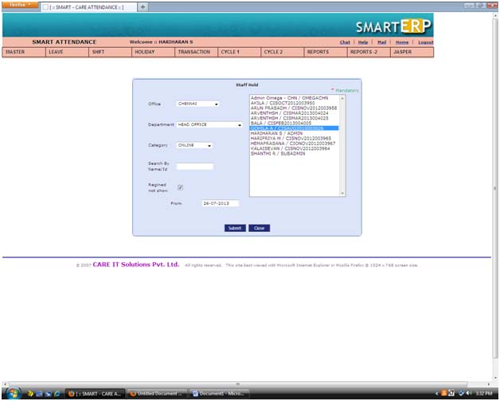
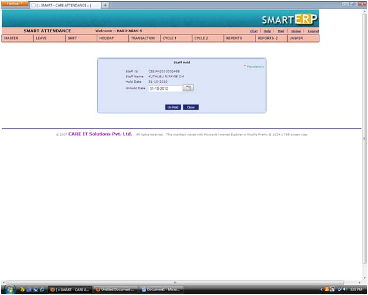

|
Staff Hold |
| This is Staff Hold view screen. We can add, edit, and delete the Staff Hold. |
| Make to add a Staff Hold by click the add button |
| Make to edit Staff Hold by click the edit button |
| To delete the Staff Hold by click the delete button. |
| |
 |
| |
| Staff Hold Add |
| You want to add a new Staff Hold entry by click the add button in Staff Hold view screen. |
| Select the employee name |
| Enter the Staff Hold date. |
| Submit the add button. |
| The Staff Hold successfully added. |
| |
|  |
| |
| Staff Hold Edit |
| |
| Edit or change a Staff Hold, |
| Choose or tick the check box for Staff Hold in view screen |
| Click the Edit button in Staff Hold view screen |
| Change the un hold date. |
| Submit the button. |
| The Staff Hold successfully updated. |
| |
|  |